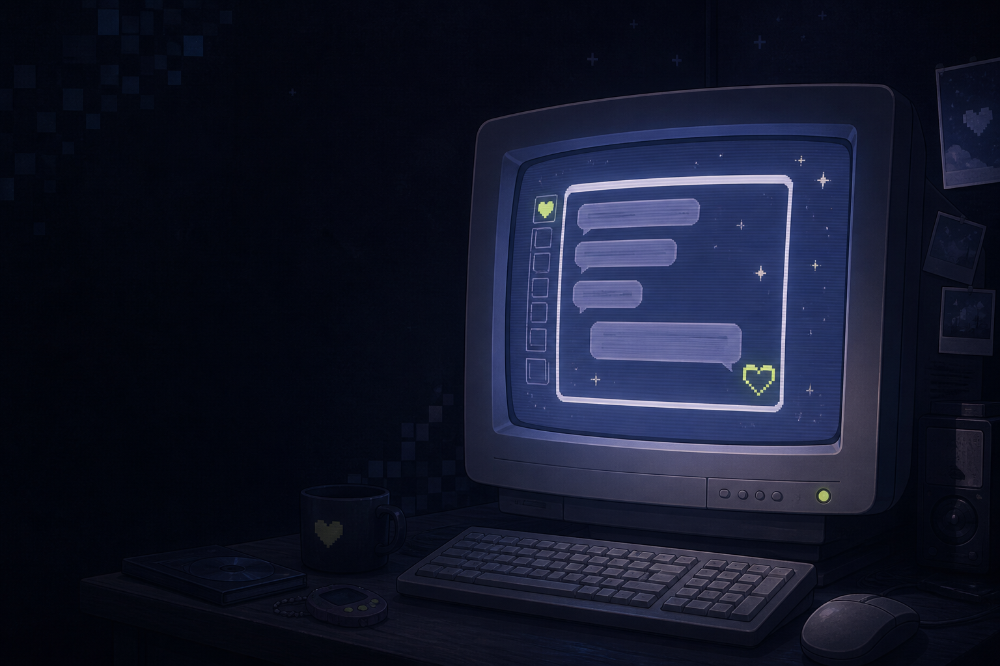

Decode the chat.
Find the real one.
An early-access dating chatsim about VTubers, internet spam, and the people behind the avatars.

What is live right now
Use these as orientation points, not spoilers. The game is still changing in Early Access.
Pick your next click
Three useful starting points for a first run, a route hunt, or a quick version check.
Play like you are collecting signals.
The best early-access notes separate what the store confirms from what your save file proves.
Read the room
Follow chats, streams, and DMs. Notice which mutuals keep showing up.
Protect the wallet
Use the minigames to earn money, then decide what is worth a superchat or collectible.
Log the reveal
When a voice call or identity reveal happens, record the build and your choice before moving on.
Six names to keep on your radar
The official store currently lists these romanceable Discord mutuals. Route-specific answers are intentionally held for a verified playthrough.